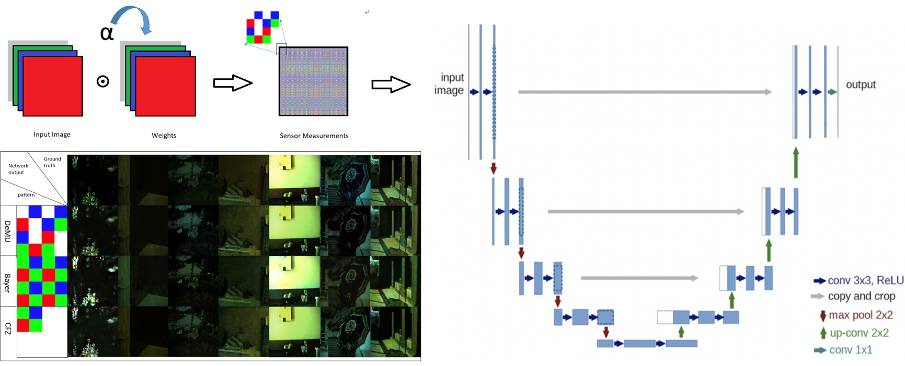

|
We designed a demosaicing U-Net (DeMU) that improves the image reconstruction, which contains a demosiacing pattern. The pattern contains red, green and blue channel, along with an unfiltered channel that is the sum of all three RGB channels. DeMU takes noised images as input, uses sensor pattern to mimic the behavior of a camera, reconstructs demosiaced images, and compares them to the ground truth.
Result proves that DeMU learnt a better sensor pattern compared to traditional Bayer pattern and CFZ pattern in specific range of noise variance.
|
|
|
| Paper: |
Code and Data:
|